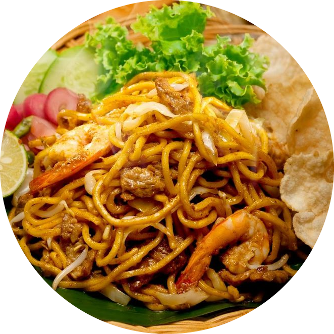

Mie Aceh
Mie Aceh adalah hidangan mie khas dari Provinsi Aceh, Indonesia. Mie ini dikenal dengan kuah kari yang kaya rempah, yang memberikan cita rasa pedas dan gurih. Mie Aceh sering disajikan dengan irisan daging sapi, kerang, udang, dan sayuran seperti kecambah dan tauge. Keunikan rasanya membuat Mie Aceh menjadi salah satu kuliner yang dicari oleh pecinta masakan Indonesia.

Bahan-Bahan
Mie lidi / mie tebal
200 gram daging sapi dipotong dadu
500 ml air kaldu sapi
1 buah tomat potong 4
4 siung bawang merah diiris
3 siung bawang putih diiris
1 batang daun bawang dan seledri
Toge
Udang
Sayur kol diiris
1 sendok makan kecap asin
1 sendok makan kaldu sapi
2 sendok makan jeruk lemon
5 sendok makan kecap manis
Garam secukupnya
Bahan bumbu halus:
4 siung bawang merah
4 siung bawang putih
4 buah cabe rawit merah
6 buah cabe merah
3 cm kunyit
5 buah kapulaga
4 buah kemiri
1 sendok teh lada
1 sendok makan kari bubuk
Jinten
Bahan pelengkap:
Kacang tanah goreng
Acar bawang merah
Emping
Cara Membuat
1. Rebus mie, lalu sisihkan;
2. Tumis bawang merah dan bawang putih sampai harum. Masukkan bumbu halus, air kaldu, dan daging. Lalu masak sampai empuk;
3. Masukkan kecap asin, kecap manis kemudian aduk rata. Tambahkan toge, kol, daun bawang, seledri, dan bumbu lainnya;
4. Masukkan mie, aduk sampai rata, lalu koreksi rasa;
5. Sajikan dengan bahan pelengkap.